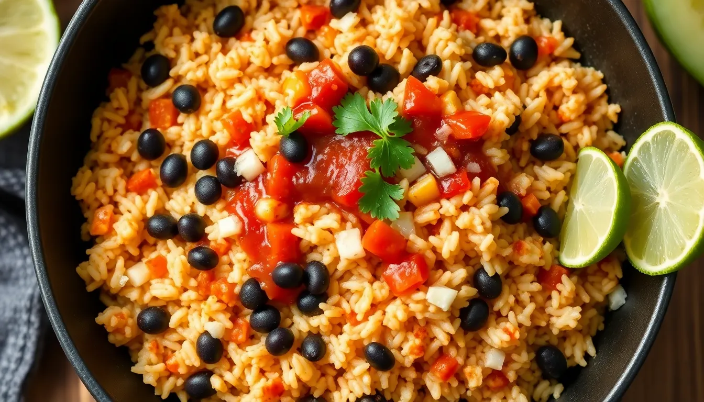

Black Bean Taco Rice Skillet
Prep time: 10 minutes - Cook time: 15 minutes - Total time: 25 minutes
Estimated total cost: $7.80 - Estimated cost per serving: $1.95 - Serves: 4

Ingredients
- 2 cups cooked rice — $0.80
- 2 cans black beans, drained and rinsed — $2.00
- 1 medium onion, diced — $0.80
- 1 cup salsa — $1.20
- 1 tablespoon oil — $0.20
- 1 teaspoon chili powder — $0.15
- 1 teaspoon cumin — $0.10
- 1/2 teaspoon garlic powder — $0.05
- 1/2 teaspoon salt — $0.05
- Optional: chopped cilantro, lime juice, or hot sauce — $0.50
Estimated ingredient total: $5.35 to $5.85
Displayed planning estimate: $7.80
Detailed Instructions
- Cook the rice ahead of time or reheat leftover rice so it is ready to go.
- Dice the onion into small pieces.
- Heat the oil in a large skillet over medium heat.
- Add the onion and cook for 4 to 5 minutes, stirring occasionally, until softened.
- Stir in the chili powder, cumin, garlic powder, and salt.
- Add the black beans and salsa and stir well.
- Cook for 3 to 4 minutes until the beans are hot and the salsa has coated everything.
- Add the cooked rice to the skillet and fold it into the bean mixture.
- Continue cooking for 2 to 3 minutes until everything is evenly heated through.
- Taste and adjust seasoning if needed.
- Top with optional cilantro, lime juice, or hot sauce and serve warm.
Helpful Notes
- This is a great use for leftover rice.
- Corn can be added if you want more volume.
- Serve it in bowls or wrapped in tortillas if you want variety.
Price Note
Ingredient prices can vary by store, brand, and region, so these are planning estimates rather than exact totals.